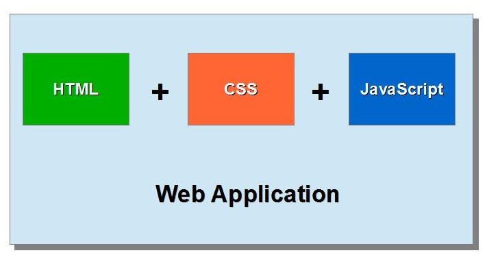
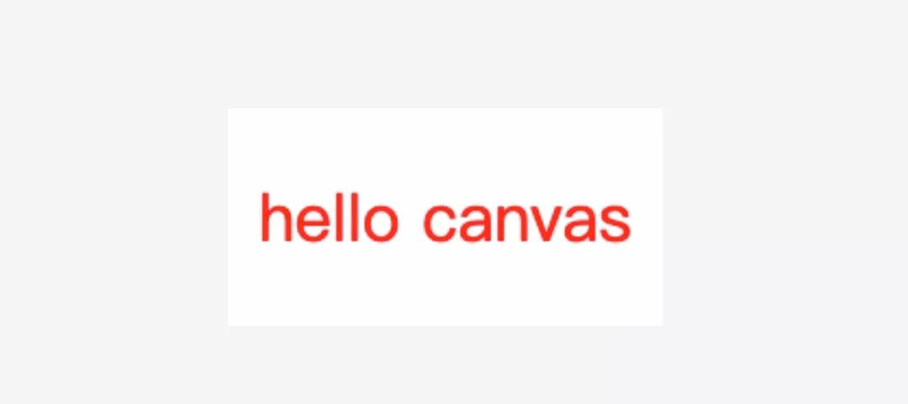
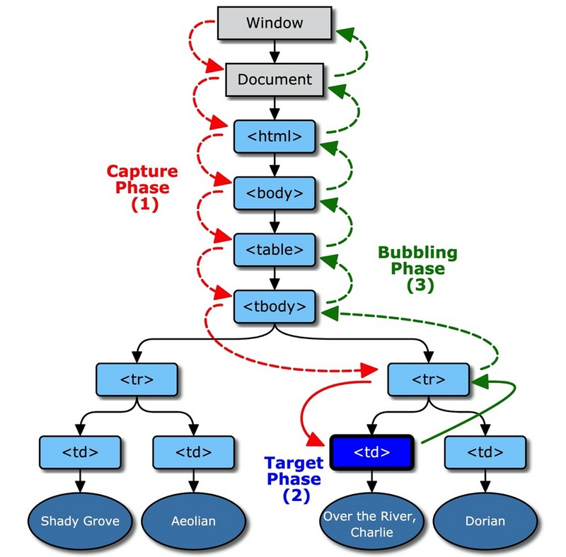
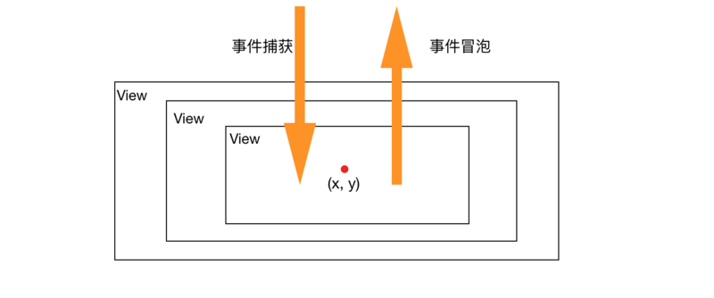
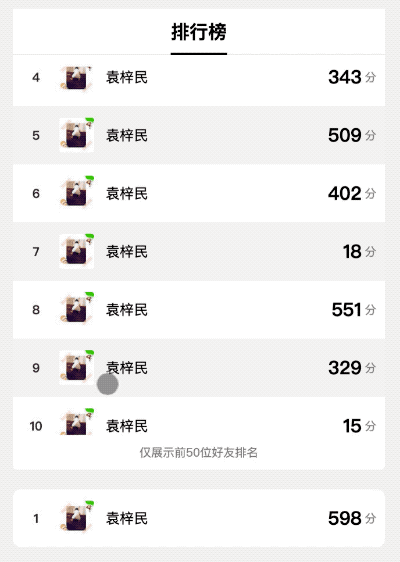
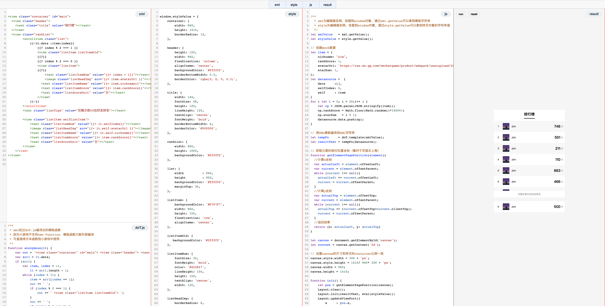

原文连接:https://www.cnblogs.com/yuanzm/p/12053110.html
背景
当我们开发一个canvas应用的时候，出于效率的考量，免不了要选择一个渲染引擎（比如PixiJS)或者更强大一点的游戏引擎（比如Cocos Creator、Layabox)。
渲染引擎通常会有Sprite的概念，一个完整的界面会由很多的Sprite组成，如果编写复杂一点的界面，代码里面会充斥创建精灵、设置精灵位置和样式的“重复代码”，最终我们得到了极致的渲染性能却牺牲了代码的可读性。
游戏引擎通常会有配套的IDE，界面通过拖拽即可生成，最终导出场景配置文件，这大大方便了UI开发，但是游戏引擎一般都很庞大，有时候我们仅仅想开发个好友排行榜。
基于以上分析，如果有一款渲染引擎，既能用配置文件的方式来表达界面，又可以做到轻量级，将会大大满足我们开发轻量级canvas应用的场景。
本文会详细介绍开发一款可配置化轻量级渲染引擎需要哪些事情，代码开源至Github：https://github.com/wechat-miniprogram/minigame-canvas-engine。
配置化分析
我们首先期望页面可配置化，来参考下Cocos Creator的实现：对于一个场景，在IDE里面一顿操作，最后场景配置文件大致长下面的样子：
// 此处省略n个节点
{
"__type__": "cc.Scene",
"_opacity": 255,
"_color": {
"__type__": "cc.Color",
"r": 255,
"g": 255,
"b": 255,
"a": 255
},
"_parent": null,
"_children": [
{
"__id__": 2
}
],
},在一个JSON配置文件里面，同时包含了节点的层级结构和样式，引擎拿到配置文件后递归生成节点树然后渲染即可。PixiJS虽然只是个渲染引擎，但同样可以和cocos2d一样做一个IDE去拖拽生成UI，然后写一个解析器，声称自己是PixiJS Creator😬。
这个方案很好，但缺点是每个引擎有一套自己的配置规则，没法做到通用化，而且在没有IDE的情况下，手写配置文件也会显得反人类，我们还需要更加通用一点的配置。
寻找更优方案
游戏引擎的配置方案如果要用起来主要有两个问题：
- 手写可读性差，特别是对于层级深的节点树；
- 样式和节点树没有分离，配置文件冗余；
- 配置不通用；
对于高可读性和样式分离，我们惊讶的发现，这不就是Web开发的套路么，编写HTML、CSS丢给浏览器，界面就出来了，省时省力。

如此优秀的使用姿势，我们要寻求方案在canvas里面实现一次！
实现分析
结果预览
在逐步分析实现方案之前，我们先抛个最终实现，编写XML和样式，就可以得到结果：
let template = `
<view id="container">
<text id="testText" class="redText" value="hello canvas"> </text>
</view>
`；
let style = {
container: {
width: 200,
height: 100,
backgroundColor: '#ffffff',
justContent: 'center',
alignItems: 'center',
},
testText: {
color: '#ff0000',
width: 200,
height: 100,
lineHeight: 100,
fontSize: 30,
textAlign: 'center',
}
}
// 初始化渲染引擎
Layout.init(template, style);
// 执行真正的渲染
Layout.layout(canvasContext);
方案总览
既然要参考浏览器的实现，我们不妨先看看浏览器是怎么做的：

如上图所示，浏览器从构建到渲染界面大致要经过下面几步：
- HTML 标记转换成文档对象模型 (DOM)；CSS 标记转换成 CSS 对象模型 (CSSOM)
- DOM 树与 CSSOM 树合并后形成渲染树。
- 渲染树只包含渲染网页所需的节点。
- 布局计算每个对象的精确位置和大小。
- 最后一步是绘制，使用最终渲染树将像素渲染到屏幕上。
在canvas里面要实现将HTML+CSS绘制到canvas上面，上面的步骤缺一不可。
构建布局树和渲染树
上面的方案总览又分两大块，第一是渲染之前的各种解析计算，第二是渲染本身以及渲染之后的后续工作，先看看渲染之前需要做的事情。
解析XML和构建CSSOM
首先是将HTML（这里我们采用XML）字符串解析成节点树，等价于浏览器里面的“HTML 标记转换成文档对象模型 (DOM)”，在npm搜索xml parser，可以得到很多优秀的实现，这里我们只追求两点：
- 轻量：大部分库为了功能强大动辄几百k，而我们只需要最核心的xml解析成JSON对象；
- 高性能：在游戏里面不可避免有长列表滚动的场景，这时候XML会很大，要尽量控制XML解析时间；
综合以上考量，选择了fast-xml-parser，但是仍然做了一些阉割和改造，最终模板经过解析会得到下面的JSON对象
{
"name":"view",
"attr":{
"id":"container"
},
"children":[
{
"name":"text",
"attr":{
"id":"testText",
"class":"redText",
"value":"hello canvas"
},
"children":[
]
}
]
}接下来是构建CSSOM，为了减少解析步骤，我们手工构建一个JSON对象，key的名字为节点的id或者class，以此和XML节点形成绑定关系：
let style = {
container: {
width: 200,
height: 100
},
}DOM 树与 CSSOM 树合并后形成渲染树
DOM树和CSSOM构建完成后，他们仍是独立的两部分，需要将他们构建成renderTree，由于style的key和XML的节点有关联，这里简单写个递归处理函数就可以实现：该函数接收两个参数，第一个参数为经过XML解析器解析吼的节点树，第二个参数为style对象，等价于DOM和CSSOM。
// 记录每一个标签应该用什么类来处理
const constructorMap = {
view : View,
text : Text,
image : Image,
scrollview: ScrollView,
}
const create = function (node, style) {
const _constructor = constructorMap[node.name];
let children = node.children || [];
let attr = node.attr || {};
const id = attr.id || '';
// 实例化标签需要的参数，主要为收集样式和属性
const args = Object.keys(attr)
.reduce((obj, key) => {
const value = attr[key]
const attribute = key;
if (key === 'id' ) {
obj.style = Object.assign(obj.style || {}, style[id] || {})
return obj
}
if (key === 'class') {
obj.style = value.split(/\s+/).reduce((res, oneClass) => {
return Object.assign(res, style[oneClass])
}, obj.style || {})
return obj
}
if (value === 'true') {
obj[attribute] = true
} else if (value === 'false') {
obj[attribute] = false
} else {
obj[attribute] = value
}
return obj;
}, {})
// 用于后续元素查询
args.idName = id;
args.className = attr.class || '';
const element = new _constructor(args)
element.root = this;
// 递归处理
children.forEach(childNode => {
const childElement = create.call(this, childNode, style);
element.add(childElement);
});
return element;
}经过递归解析，构成了一颗节点带有样式的renderTree。
计算布局树
渲染树搞定之后，要着手构建布局树了，每个节点在相互影响之后的位置和大小如何计算是一个很头疼的问题。但仍然不慌，因为我们发现近几年非常火的React Native、weex之类的框架必然会面临同样的问题：
Weex 是使用流行的 Web 开发体验来开发高性能原生应用的框架。
React Native 使用JavaScript和React编写原生移动应用
这些框架也需要将html和css编译成客户端可读的布局树，能否避免重复造轮子将它们的相关模块抽象出来使用呢？起初我以为这部分会很庞大或者和框架强耦合，可喜的是这部分抽象出来仅仅只有1000来行，他就是week和react native早起的布局引擎css-layout。这里有一篇文章分析得非常好，直接引用至，不再赘述：《由 FlexBox 算法强力驱动的 Weex 布局引擎》
npm上面可以搜到css-layout，它对外暴露了computeLayout方法，只需要将上面得到的布局树传给它，经过计算之后，布局树的每个节点都会带上layout属性，它包含了这个节点的位置和尺寸信息！
// create an initial tree of nodes
var nodeTree = {
"style": {
"padding": 50
},
"children": [
{
"style": {
"padding": 10,
"alignSelf": "stretch"
}
}
]
};
// compute the layout
computeLayout(nodeTree);
// the layout information is written back to the node tree, with
// each node now having a layout property:
// JSON.stringify(nodeTree, null, 2);
{
"style": {
"padding": 50
},
"children": [
{
"style": {
"padding": 10,
"alignSelf": "stretch"
},
"layout": {
"width": 20,
"height": 20,
"top": 50,
"left": 50,
"right": 50,
"bottom": 50,
"direction": "ltr"
},
"children": [],
"lineIndex": 0
}
],
"layout": {
"width": 120,
"height": 120,
"top": 0,
"left": 0,
"right": 0,
"bottom": 0,
"direction": "ltr"
}
}这里需要注意的是，css-layout实现的是标准的Flex布局，如果对于CSS或者Flex布局不是很熟悉的同学，可以参照这篇文章进行快速的入门：《Flex 布局教程：语法篇》。再值得一提的是，作为css-layout的使用者，好的习惯是给每个节点都赋予width和height属性😀。
渲染
基础样式渲染
在处理渲染之前，我们先分析下在Web开发中我们重度使用的标签：
| 标签 | 功能 |
|---|---|
| div | 通常作为容器使用，容器也可以有一些样式，比如border和背景颜色之类的 |
| img | 图片标签，向网页中嵌入一幅图像，通常我们会对图片添加borderRadius实现圆形头像 |
| p/span | 文本标签，用于展示段落或者行内文字 |
在构建节点树的过程中，对于不同类型的节点会有不同的类去处理，上述三个标签对应了View，Image和Text类，每个类都有自己的render函数。
render函数只需要做好一件事情：根据css-layout计算得到的layout属性和节点本身样式相关的style属性，通过canvas API的形式绘制到canvas上；
这件事情听起来工作量很大，但其实也没有这么难，比如下面演示如何处理文本的绘制，实现文本的字体、字号、左对齐右对齐等。
function renderText() {
let style = this.style || {};
this.fontSize = style.fontSize || 12;
this.textBaseline = 'top';
this.font = `${style.fontWeight || ''} ${style.fontSize || 12}px ${DEFAULT_FONT_FAMILY}`;
this.textAlign = style.textAlign || 'left';
this.fillStyle = style.color || '#000';
if ( style.backgroundColor ) {
ctx.fillStyle = style.backgroundColor;
ctx.fillRect(drawX, drawY, box.width, box.height)
}
ctx.fillStyle = this.fillStyle;
if ( this.textAlign === 'center' ) {
drawX += box.width / 2;
} else if ( this.textAlign === 'right' ) {
drawX += box.width;
}
if ( style.lineHeight ) {
ctx.textBaseline = 'middle';
drawY += style.lineHeight / 2;
}
}但这件事情又没有这么简单，因为有些效果你必须层层组合计算才能得出效果，比如borderRadius的实现、文本的textOverflow实现，有兴趣的同学可以看看源码。
再者还有更深的兴趣，可以翻翻游戏引擎是怎么处理的，结果功能过于强大之后，一个Text类就有1000多行：LayaAir的Text实现😯。
重排和重绘
当界面渲染完成，我们总不希望界面只是静态的，而是可以处理一些点击事件，比如点击按钮隐藏一部分元素，亦或是改变按钮的颜色之类的。
在浏览器里面，有对应的概念叫重排和重绘：
引自文章：《网页性能管理详解》
网页生成的时候，至少会渲染一次。用户访问的过程中，还会不断重新渲染。重新渲染，就需要重新生成布局和重新绘制。前者叫做"重排"（reflow），后者叫做"重绘"（repaint）。
那么哪些操作会触发重排，哪些操作会触发重绘呢？这里有个很简单粗暴的规则：只要涉及位置和尺寸修改的，必定要触发重排，比如修改width和height属性，在一个容器内做和尺寸位置无关的修改，只需要触发局部重绘，比如修改图片的链接、更改文字的内容（文字的尺寸位置固定），更具体的可以查看这个网站csstriggers.com。
在我们这个渲染引擎里，如果执行触发重排的操作，需要将解析和渲染完整执行一遍，具体来讲是修改了xml节点或者与重排相关的样式之后，重复执行初始化和渲染的操作，重排的时间依赖节点的复杂度，主要是XML节点的复杂度。
// 该操作需要重排以实现界面刷新
style.container.width = 300;
// 重排前的清理逻辑
Layout.clear();
// 完整的初始化和渲染流程
Layout.init(template, style);
Layout.layout(canvasContext);对于重绘的操作，暂时提供了动态修改图片链接和文字的功能，原理也很简单：通过Object.defineProperty，当修改布局树节点的属性时，抛出repaint事件，重绘函数就会局部刷新界面。
Object.defineProperty(this, "value", {
get : function() {
return this.valuesrc;
},
set : function(newValue){
if ( newValue !== this.valuesrc) {
this.valuesrc = newValue;
// 抛出重绘事件，在回调函数里面在canvas的局部擦除layoutBox区域然后重新绘制文案
this.emit('repaint');
}
},
enumerable : true,
configurable : true
});那怎么调用重绘操作呢？引擎只接收XML和style就绘制出了页面，要想针对单个元素执行操作还需要提供查询接口，这时候布局树再次排上用场。在生成renderTree的过程中，为了匹配样式，需要通过id或者class来形成映射关系，节点也顺带保留了id和class属性，通过遍历节点，就可以实现查询API：
function _getElementsById(tree, list = [], id) {
Object.keys(tree.children).forEach(key => {
const child = tree.children[key];
if ( child.idName === id ) {
list.push(child);
}
if ( Object.keys(child.children).length ) {
_getElementsById(child, list, id);
}
});
return list;
}此时，可以通过查询API来实现实现重绘逻辑，该操作的耗时可以忽略不计。
let img = Layout.getElementsById('testimgid')[0];
img.src = 'newimgsrc';事件实现
查询到节点之后，自然是希望可以绑定事件，事件的需求很简单，可以监听元素的触摸和点击事件以执行一些回调逻辑，比如点击按钮换颜色之类的。
我们先来看看浏览器里面的事件捕获和事件冒泡机制：
引自文章《JS中的事件捕获和事件冒泡》
捕获型事件(event capturing)：事件从最不精确的对象(document 对象)开始触发，然后到最精确(也可以在窗口级别捕获事件，不过必须由开发人员特别指定)。
冒泡型事件：事件按照从最特定的事件目标到最不特定的事件目标(document对象)的顺序触发。

前提：每个节点都存在事件监听器on和发射器emit；每个节点都有个属性layoutBox，它表明了元素的在canvas上的盒子模型:
layoutBox: {
x: 0,
y: 0,
width: 100,
height: 100
}canvas要实现事件处理与浏览器并无不同，核心在于：给定坐标点，遍历节点树的盒子模型，找到层级最深的包围该坐标的节点。

当点击事件发生在canvas上，可以拿到触摸点的x坐标和y坐标，该坐标位于根节点的layoutBox内，当根节点仍然有子节点，对子节点进行遍历，如果某个子节点的layoutBox仍然包含了该坐标，再次重复执行以上步骤，直到包含该坐标的节点再无子节点，这个过程称之为事件捕获。
// 给定根节点树和触摸点的位置通过递归即可实现事件捕获
function getChildByPos(tree, x, y) {
let list = Object.keys(tree.children);
for ( let i = 0; i < list.length;i++ ) {
const child = tree.children[list[i]];
const box = child.realLayoutBox;
if ( ( box.realX <= x && x <= box.realX + box.width )
&& ( box.realY <= y && y <= box.realY + box.height ) ) {
if ( Object.keys(child.children).length ) {
return getChildByPos(child, x, y);
} else {
return child;
}
}
}
return tree;
}层级最深的节点被找到之后，调用emit接口触发该节点的ontouchstart事件，如果事先有对ontouchstart进行监听，事件回调得以触发。那么怎么实现事件冒泡呢？在事件捕获阶段我们并没有记录捕获的链条。这时候布局树的优势又体现出来了，每个节点都保存了自己的父节点和子节点信息，子节点emit事件之后，同时调用父节点的emit接口抛出ontouchstart事件，而父节点又继续对它自己的父节点执行同样的操作，直至根节点，这个过程称之为事件冒泡。
// 事件冒泡逻辑
['touchstart', 'touchmove', 'touchcancel', 'touchend', 'click'].forEach((eventName) => {
this.on(eventName, (e, touchMsg) => {
this.parent && this.parent.emit(eventName, e, touchMsg);
});
});滚动列表实现
屏幕区域内，展示的内容是有限的，而浏览器的页面通常都很长，可以滚动。这里我们实现scrollview，如果标签内子节点的总高度大于scrollview的高度，就可以实现滚动。
1.对于在容器scrollview内的所有一级子元素，计算高度之合；
function getScrollHeight() {
let ids = Object.keys(this.children);
let last = this.children[ids[ids.length - 1]];
return last.layoutBox.top + last.layoutBox.height;
}2.设定分页大小，假设每页的高度为2000，根据上面计算得到的ScrollHeight，就可以当前滚动列表总共需要几页，为他们分别创建用于展示分页数据的canvas：
this.pageCount = Math.ceil((this.scrollHeight + this.layoutBox.absoluteY) / this.pageHeight);3.递归遍历scrollview的节点树，通过每个元素的absoluteY值判断应该坐落在哪个分页上，这里需要注意的是，有些子节点会同时坐落在两个分页上面，在两个分页都需要绘制一遍，特别是图片类这种异步加载然后渲染的节点。
function renderChildren(tree) {
const children = tree.children;
const height = this.pageHeight;
Object.keys(children).forEach( id => {
const child = children[id];
let originY = child.layoutBox.originalAbsoluteY;
let pageIndex = Math.floor(originY / height);
let nextPage = pageIndex + 1;
child.layoutBox.absoluteY -= this.pageHeight * (pageIndex);
// 对于跨界的元素，两边都绘制下
if ( originY + child.layoutBox.height > height * nextPage ) {
let tmpBox = Object.assign({}, child.layoutBox);
tmpBox.absoluteY = originY - this.pageHeight * nextPage;
if ( child.checkNeedRender() ) {
this.canvasMap[nextPage].elements.push({
element: child, box: tmpBox
});
}
}
this.renderChildren(child);
});
}4.将scrollview理解成游戏里面的Camera，只把能拍摄到的区域展示出来，那么所有的分页数据从上而下拼接起来就是游戏场景，在列表滚动过程中，只“拍摄”尺寸为scrollviewWidth*scrollViewHeight的区域，就实现了滚动效果。拍摄听起来很高级，在这里其实就是通过drawImage实现就好了：
// ctx为scrollview所在的canvas，canvas为分页canvas
this.ctx.drawImage(
canvas,
box.absoluteX, clipY, box.width, clipH,
box.absoluteX, renderY, box.width, clipH,
);5.当scrollview上触发了触摸事件，会改变scrollview的top属性值，按照步骤4不断根据top去裁剪可视区域，就实现了滚动。
上述方案为空间换时间方案，也就是在每次重绘过程中，因为内容已经绘制到分页canvas上了（这里可能会比较占空间），每次重绘，渲染时间得到了最大优化。
其他
至此，一个类浏览器的轻量级canvas渲染引擎出具模型：
- 给定XML+style对象可以渲染界面；
- 支持一些特定的标签：view、text、image和scrollview；
- 支持查询节点反向修改节点属性和样式；
- 支持事件绑定；
文章篇幅有限，很多细节和难点仍然没法详细描述，比如内存管理（内存管理不当很容易内存持续增涨导致应用crash)、scrollview的滚动事件实现细节、对象池使用等。有兴趣的可以看看源码：https://github.com/wechat-miniprogram/minigame-canvas-engine/tree/master/src
下图再补一个滚动好友排行列表demo:

调试及应用场景
作为一个完整的引擎，没有IDE怎么行？这里为了提高UI调试的效率（实际上很多时候游戏引擎的工作流很长，调试UI，改个文案之类的是个很麻烦的事情），提供一个简版的在线调试器，调UI是完全够用了：https://wechat-miniprogram.github.io/minigame-canvas-engine/

最后要问，费了这么大劲搞了个渲染引擎有什么应用场景呢？当然是有的：
- 跨游戏引擎的游戏周边插件：很有游戏周边功能比如签到礼包、公告页面等都是偏H5页面的周边系统，如果通过本渲染引擎渲染到离屏canvas，每个游戏引擎都将离屏canvas当成普通精灵渲染即可实现跨游戏引擎插件；
- 极致的代码包追求：如果你对微信小游戏有所了解，就会发现现阶段在开放数据域要绘制UI，如果不想裸写UI，就得再引入一份游戏引擎，这对代码包体积影响是很大的，而大部分时候仅仅是想绘制个好友排行榜；
- 屏幕截图：这点在普通和H5和游戏里面都比较常见，将一些用户昵称和文案之类的与背景图合并成为截图，这里可以轻松实现。
- 等等等......
参考资料
1.由 FlexBox 算法强力驱动的 Weex 布局引擎:https://www.jianshu.com/p/d085032d4788
2.网页性能管理详解:https://www.ruanyifeng.com/blog/2015/09/web-page-performance-in-depth.html
3.渲染性能：https://developers.google.cn/web/fundamentals/performance/rendering
4.简化绘制的复杂度、减小绘制区域：https://developers.google.com/web/fundamentals/performance/rendering/simplify-paint-complexity-and-reduce-paint-areas?hl=zh-CN